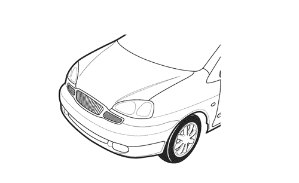
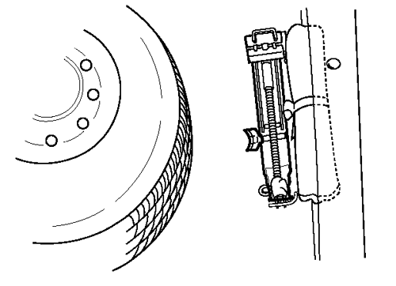
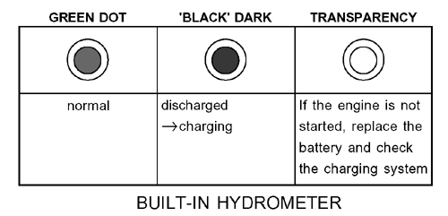
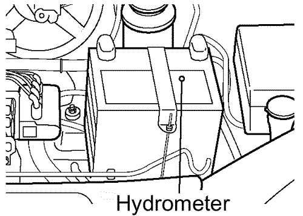

РАЗДЕЛ 6
ВНЕШНИЙ ВИД
1. ПРОВЕРКА СОСТОЯНИЯ И ОЧИСТКА АВТОМОБИЛЯ
- Снять внешний транспортировочный защитный материал(ы) и убедиться в его полном удалении. Удаление следует проводить, как указано в прилагаемых инструкциях.
- Вымыть автомобиль
- Проверить, достаточно ли хорошо вымыт автомобиль.
- При необходимости для проверки выполнить следующие действия.
- - Cмыть слабое загрязнение с помощью мягкого спрея или воды.
- - Вымыть автомобиль с помощью губки и раствора воды с мягким моющим средством.
- - Смыть пену спреем или водой.
- - Полностью ополоснуть автомобиль водой.
- - Насухо вытереть автомобиль сверху вниз чистой замшей или мягкой впитывающей салфеткой.
2. ПРОВЕРКА СБОРКИ, ПРАВИЛЬНОСТИ И НАДЕЖНОСТИ КРЕПЛЕНИЯ ДЕТАЛЕЙ И УЗЛОВ
Проверить сборку, правильность и надёжность крепления следующих деталей и узлов.
- - Бамперы
- - Молдинги
- - Решётка
- - Порогов
- - Эмблем
- - Грязезащитных приспособлений
- - Релинги для багажа (опция)



3. НАРУЖНАЯ ОТДЕЛКА
Проверить наружную отделку и при устранить возможные дефекты при их обнаружении, затем выполнить завершающие действия, как указано ниже.
- - Очистка деталей - удалить следы спрея, замазки, герметика и т.п.
- - Отделка - сколы краски (с помощью красящей кисти или спрея)
- - Полировка вручную - небольшие неоднородности лакокрасочного покрытия мокрой пескоструйной обработкой с бумагой зерном 600 или ручной смесью.
4. ЗАЩИТНОЕ ПОКРЫТИЕ ВНУТРЕННЕЙ ОТДЕЛКИ И КОВРОВОГО ПОКРЫТИЯ
Проверить чистоту указанных ниже элементов салона.
- - Приборная панель и солнцезащитные козырьки.
- - Опоры для ног, сиденья и ковровое покрытие.
- - Панели дверей, консоли и обшивка потолка.
- - Внутренние накладки и твёрдые элементы отделки: правильность установки, следы спрея, полировку, уплотнители и места склейки.
- - Обшивка багажника.
5. ЗАПАСНОЕ КОЛЕСО, ДОМКРАТ И ВОДИТЕЛЬСКИЙ ИНСТРУМЕНТ
Проверить наличие запасного колеса, домкрата и водительских инструментов, которые должны располагаться в багажном/грузовом отделении. Запасное колесо крепится с помощью болта под днищем багажника. Домкрат и водительские инструменты располагаются над запасным колесом.
ОПИСАНИЕ |
|
Запасное колесо
Сумка с инструментами
Ключ для гайки крепления колеса
Инструмент - гаечный ключ
Домкрат
Рычаг домкрата
Инструмент - отвёртка
|

6. АККУМУЛЯТОР
Проверить состояние аккумулятора с помощью гидрометра (тестовый индикатор), расположенного вверху аккумулятора.

